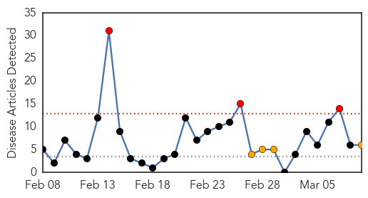
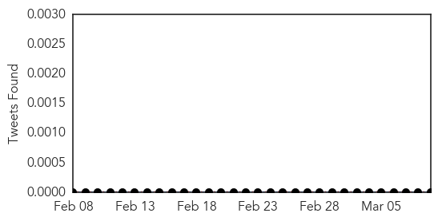
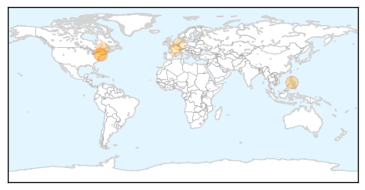

Toggle navigation
Early Warning
Daily Alerts
Measles
Mar 09, 2014
Compare to:
-
Dengue Fever
Hemmorhagic Fever
Mold/Fungal Infection
Influenza
Meningitis
Pertussis / Whooping Cough
Middle East Respiratory Syndrome
Cholera
Hepatitis
Chikungunya
Yellow Fever
Bubonic Plague
West Nile Virus
Swine Flu
Ebola
Unknown
Mumps
30 Day Trends
Web: 3
alerts
, 4
warnings
Twitter: 0
alerts
, 0
warnings
Top Articles:
0.994
New York City Health Department Reports 16 Cases of Measles
0.923
Guardian Liberty Voice
0.898
Measles Outbreak Means Symptom Awareness
0.851
Measles outbreak forces B.C. health authorities to sound the alarm
0.659
Using viruses to fight cancer
0.606
Vietnam city under the gun to shoot back at measles
Top Tweets:
No tweets found for Mar 09, 2014
Web/News Articles

Tweets

Article Locations

Article Confidences